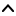

| Top |  |
GObject
╰── GInitiallyUnowned
╰── GtkWidget
╰── GtkContainer
╰── GtkMenuShell
╰── GtkMenu
╰── XfwWindowActionMenu
XfwWindowActionMenu is a GtkMenu that contains actions that can be performed on a toplevel window, such as minimizing, maximizing, pinning, and moving to another workspace.
GtkWidget *
xfw_window_action_menu_new (XfwWindow *window);
Creates a new window action menu that acts on window
.
[constructor]
a new XfwWindowActionMenu instance, with a floating reference owned by the caller.
[not nullable][transfer full]